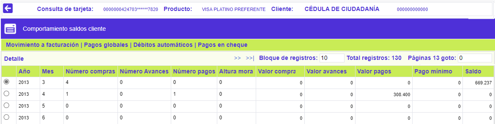
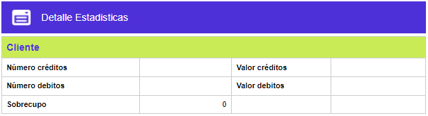
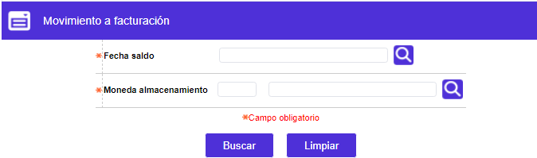
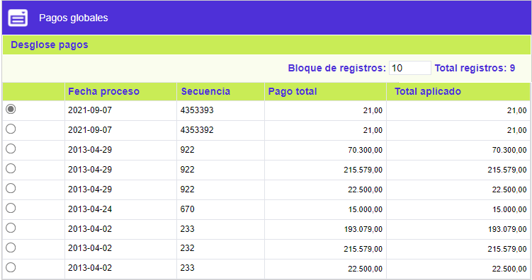
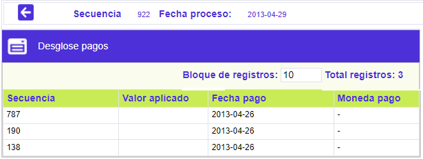
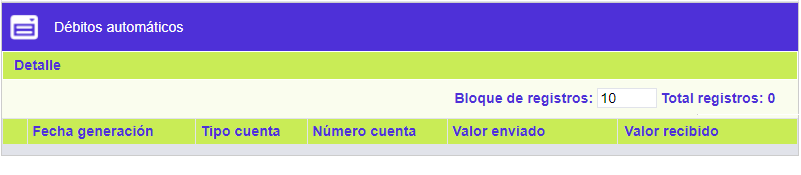

Historia
Formulario que se invoca desde la Consulta centralizada de tarjeta, ilustra, cronológicamente, por año / mes, desde que se activó la tarjeta por primera vez, los datos consolidados de los principales movimientos monetarios de la misma. Adicionalmente, se dispone de los enlaces: Movimiento a facturación, Pagos globales, Débitos automáticos y Pagos en cheque. Si se desea conocer información adicional, basta con activar el enlace Detalle, cuyo formulario se ilustra más abajo:


Movimiento a facturación: Seleccionando de la funcionalidad de calendario la fecha de facturación para la que se requiere conocer los movimientos de la tarjeta e indicando el código de la moneda oficial, el sistema retorna la información correspondiente, si eventualmente se desea observar a .

Pagos globales: En el formulario invocado se ilustran los registros de los diferentes pagos que evidencia la tarjeta, adicionalmente, se cuenta con el enlace Desglose pagos, que permite visualizar con más detalle los datos que componen cada pago:


Débitos automáticos: En el formulario invocado se ilustran los registros de los diferentes de los débitos realizados a las cuentas del tarjetahabiente y luego aplicados como pagos a su tarjeta, si se tienen registros de esos movimientos, es posible conocer información adicional mediante el enlace Detalle:

Pagos en cheque: En el formulario invocado se ilustran los registros de los diferentes pagos que fueron efectuados mediante cheques.